LF 13 Zahnmedizinische Fachangestellte: Dienstplanung und Zahlungsüberwachung – Übungen, Lösungen + Lernvideo
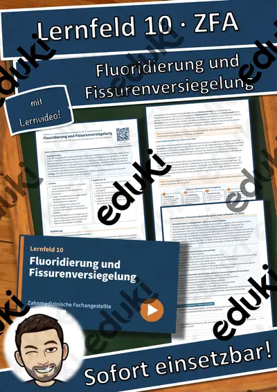
LF 10 Zahnmedizinische Fachangestellte: Fluoridierung und Fissurenversiegelung – Übungen, Lösungen + Lernvideo

Materialpaket Lernfelder Zahnmedizinische Fachangestellte Berufsschule Lehrjahr 2: 7 Lernfeld-Hefte mit Übungen, Lösungen und Lernvideo

Materialpaket Lernfelder Zahnmedizinische Fachangestellte Berufsschule Lehrjahr 1: 5 Lernfeld-Hefte mit Übungen, Lösungen und Lernvideo
LF 9 Zahnmedizinische Fachangestellte: Wareneingang, Lagerung und Rechnungsprüfung – Übungen, Lösungen + Lernvideo
LF 1 Zahnmedizinische Fachangestellte: Ausbildungsvertrag, Rechte und Pflichten – Übungen, Lösungen + Lernvideo
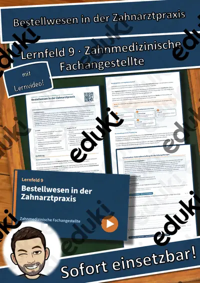
LF 9 Zahnmedizinische Fachangestellte: Bestellwesen in der Zahnarztpraxis – Übungen, Lösungen + Lernvideo
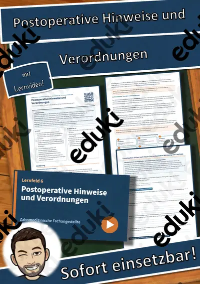
LF 6 Zahnmedizinische Fachangestellte: Postoperative Hinweise und Verordnungen – Übungen, Lösungen + Lernvideo

LF 8 Zahnmedizinische Fachangestellte: Mundhygieneunterweisung und Adhärenzförderung – Übungen, Lösungen + Lernvideo
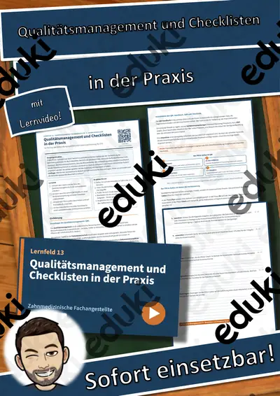
LF 13 Zahnmedizinische Fachangestellte: Qualitätsmanagement und Checklisten in der Praxis – Übungen, Lösungen + Lernvide

LF 5 Zahnmedizinische Fachangestellte: Wurzelkanalbehandlung: Ablauf, Instrumente und Assistenz – Übungen, Lösungen + Le
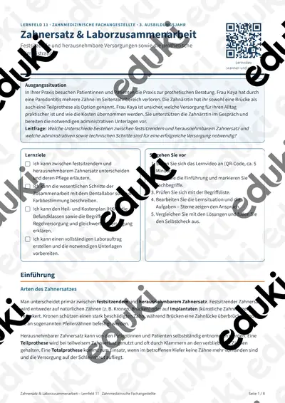
LF 11 Zahnmedizinische Fachangestellte: Zahnersatz & Laborzusammenarbeit – Übungen, Lösungen + Lernvideo
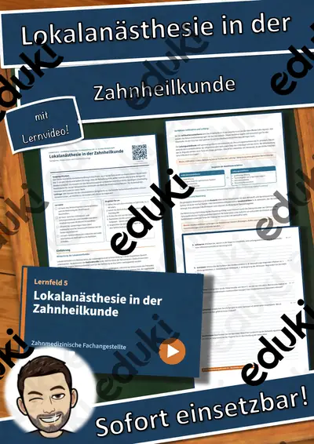
LF 5 Zahnmedizinische Fachangestellte: Lokalanästhesie in der Zahnheilkunde – Übungen, Lösungen + Lernvideo
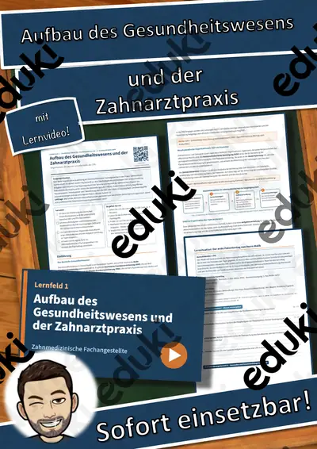
LF 1 Zahnmedizinische Fachangestellte: Aufbau des Gesundheitswesens und der Zahnarztpraxis – Übungen, Lösungen + Lernvid
LF 6 Zahnmedizinische Fachangestellte: Zahnextraktion: Instrumente, Sterilität und Wundversorgung – Übungen, Lösungen +

LF 12 Zahnmedizinische Fachangestellte: Bildfehler und Qualitätssicherung bei Röntgenaufnahmen – Übungen, Lösungen + Ler
LF 2 Zahnmedizinische Fachangestellte: Schweigepflicht und Datenschutz in der Zahnarztpraxis – Übungen, Lösungen + Lernv
LF 8 Zahnmedizinische Fachangestellte: Parodontalerkrankungen: Entstehung und Status – Übungen, Lösungen + Lernvideo
LF 4 Zahnmedizinische Fachangestellte: Füllungsmaterialien und Assistenz bei der Füllungstherapie – Übungen, Lösungen +
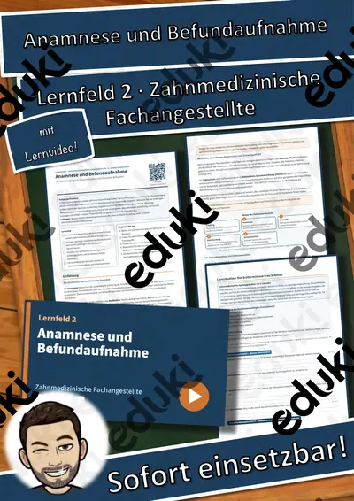
LF 2 Zahnmedizinische Fachangestellte: Anamnese und Befundaufnahme – Übungen, Lösungen + Lernvideo
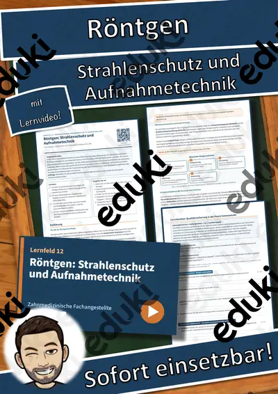
LF 12 Zahnmedizinische Fachangestellte: Röntgen: Strahlenschutz und Aufnahmetechnik – Übungen, Lösungen + Lernvideo
LF 3 Zahnmedizinische Fachangestellte: Infektionsschutz und Abfallmanagement in der Zahnarztpraxis – Übungen, Lösungen +
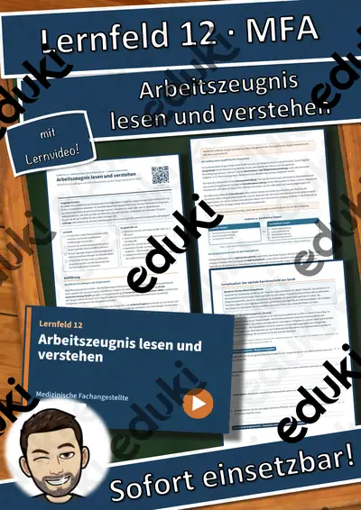
LF 12 Medizinische Fachangestellte: Arbeitszeugnis lesen und verstehen – Übungen, Lösungen + Lernvideo
LF 7 Zahnmedizinische Fachangestellte: Notfallmanagement in der Zahnarztpraxis – Übungen, Lösungen + Lernvideo
LF 9 Medizinische Fachangestellte: Endoskopievorbereitung und Darmvorbereitung – Übungen, Lösungen + Lernvideo
LF 11 Zahnmedizinische Fachangestellte: Heil- und Kostenplan sowie Festzuschüsse – Übungen, Lösungen + Lernvideo
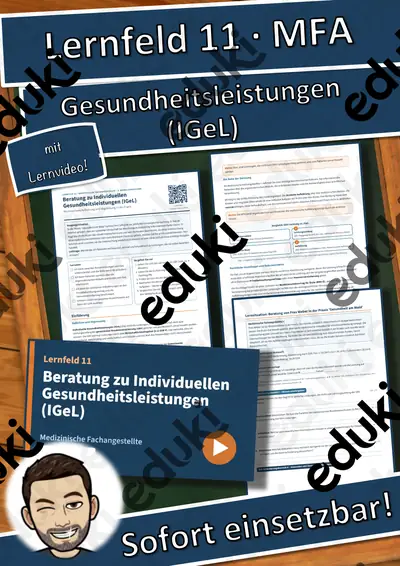
LF 11 Medizinische Fachangestellte: Beratung zu Individuellen Gesundheitsleistungen (IGeL) – Übungen, Lösungen + Lernvid
LF 1 Medizinische Fachangestellte: Jugendarbeitsschutz und Mutterschutz in der Arztpraxis – Übungen, Lösungen + Lernvide
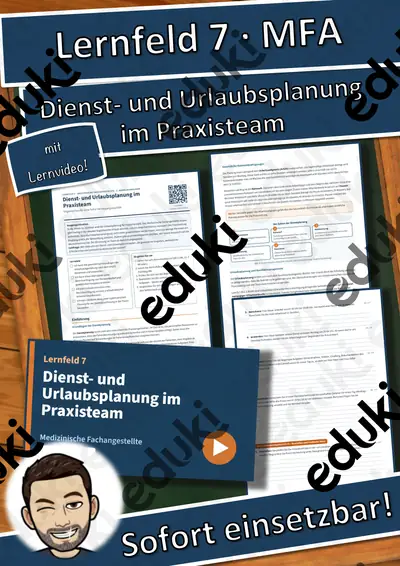
LF 7 Medizinische Fachangestellte: Dienst- und Urlaubsplanung im Praxisteam – Übungen, Lösungen + Lernvideo
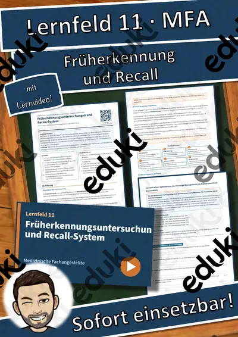
LF 11 Medizinische Fachangestellte: Früherkennungsuntersuchungen und Recall-System – Übungen, Lösungen + Lernvideo
Keine Materialien gefunden – versuch einen anderen Suchbegriff oder Filter.
Praxisnah nach Lernfeld
Wer Zahnmedizinische oder Medizinische Fachangestellte unterrichtet, braucht Material, das den Praxisalltag aufgreift. Diese Seite bündelt Lernfeld-Einheiten, die jeweils ein Handlungsfeld der Ausbildung bearbeiten: Der Titel nennt Lernfeld und Beruf, die Aufgaben beschreiben typische Situationen. Klassenstufen gibt es nicht.
Zahnmedizinische Fachangestellte
Der größte Teil der Reihe gilt der Zahnarztpraxis. Zu den Titeln gehören „Anamnese und Befundaufnahme“, „Infektionsschutz und Abfallmanagement“, „Lokalanästhesie in der Zahnheilkunde“, „Wurzelkanalbehandlung“, „Zahnextraktion“ und „Röntgen: Strahlenschutz und Aufnahmetechnik“. Außerdem „Notfallmanagement in der Zahnarztpraxis“ und „Heil- und Kostenplan sowie Festzuschüsse“.
Medizinische Fachangestellte
Für die ärztliche Praxis gibt es „Lagerung von Arzneimitteln und Kühlkette“, „Endoskopievorbereitung und Darmvorbereitung“, „Früherkennungsuntersuchungen und Recall-System“, „Beratung zu Individuellen Gesundheitsleistungen“ und „Dienst- und Urlaubsplanung im Praxisteam“.
Berufsübergreifende Themen
Datenschutz und Schweigepflicht, Qualitätsmanagement und Arbeitsrecht betreffen alle Praxen. Zu Letzterem gehören „Jugendarbeitsschutz und Mutterschutz in der Arztpraxis“ und „Arbeitszeugnis lesen und verstehen“.
Einsatz in der Schule
Die Materialien eignen sich als Lernsituation, Übung oder Vertretungsmaterial. Vor dem Einsatz sollte die Lehrkraft die Aktualität von Verfahren und Abrechnungsfragen prüfen.
Praxisbezug
Die Aufgaben stellen typische Situationen aus der Praxis nach: Ein Patient sagt etwas, ein Gerät muss vorbereitet werden, eine Abrechnung ist zu erstellen. Auszubildende üben so, fachlich korrekt zu handeln und zu begründen, was sie tun, auch in der Prüfung.
Prüfungsvorbereitung
Zur Vorbereitung auf Zwischen- und Abschlussprüfung lassen sich die Einheiten wiederholen: Die Lernenden arbeiten die Aufgaben ohne Hilfen durch und vergleichen mit der Lösung. Fehler zeigen schnell, welche Themen noch Übung brauchen.
Auch Datenschutz und Schweigepflicht lassen sich so einüben, weil sie in vielen Aufgaben vorkommen und im Berufsalltag besonders ernst genommen werden müssen.
Häufige Fragen
Wie finde ich ein bestimmtes Lernfeld?
Suche nach Beruf und Lernfeld-Nummer, zum Beispiel nach Zahnmedizinische Fachangestellte Röntgen.
Sind die Texte fachlich geprüft?
Sie sind sorgfältig recherchiert, ersetzen aber nicht aktuelle Richtlinien. Fachliche Details sollten Lehrkräfte vor dem Einsatz prüfen.
Sind Musterlösungen dabei?
Ja, zu jedem Material.
Gibt es Material für die Pflege?
Auf dieser Seite liegen derzeit vor allem Zahnmedizinische und Medizinische Fachangestellte.